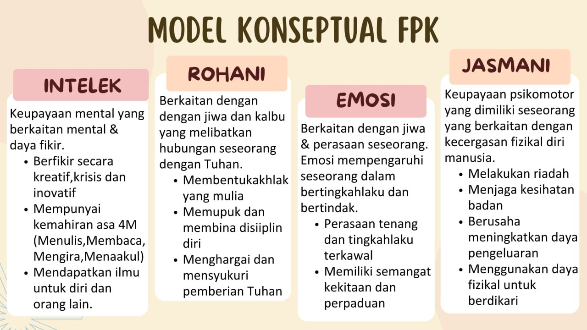

Pendidikan di Malaysia merupakan usaha berterusan ke arah lebih memperkembangkan lagi potensi individu secara menyeluruh dan bersepadu untuk melahirkan insan yang seimbang dan harmonis dari segi intelek, rohani, emosi dan jasmani berdasarkan individu dan kepatuhan kepada Tuhan. Usaha ini adalah bertujuan untuk melahirkan rakyat Malaysia yang berilmu pengetahuan, keterampilan, berakhlak mulia, bertanggungjawab dan berkeupayaan mencapai kesejahteraan diri serta memberi sumbangan terhadap kemakmuran dan keharmonian keluarga, masyarakat dan negara.
